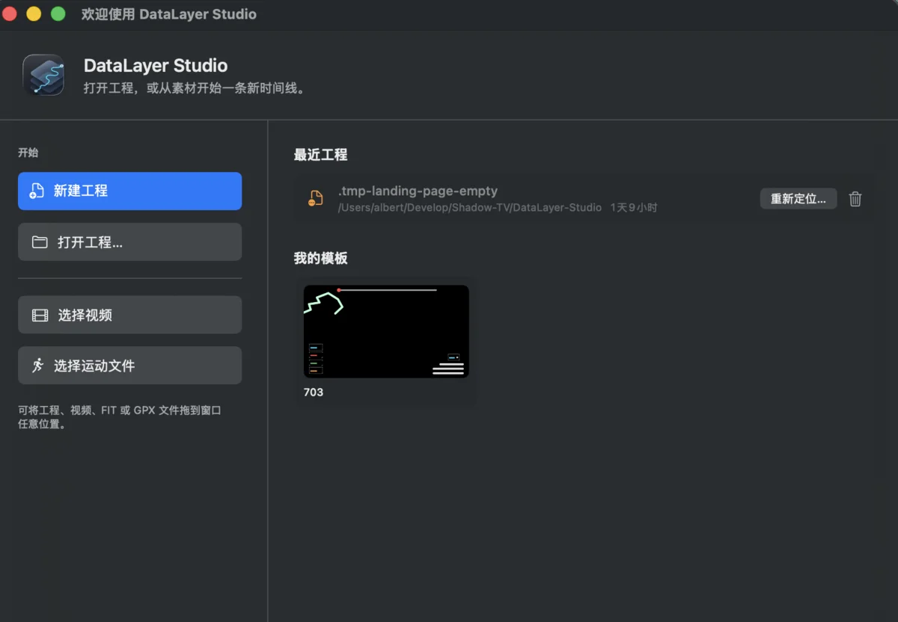
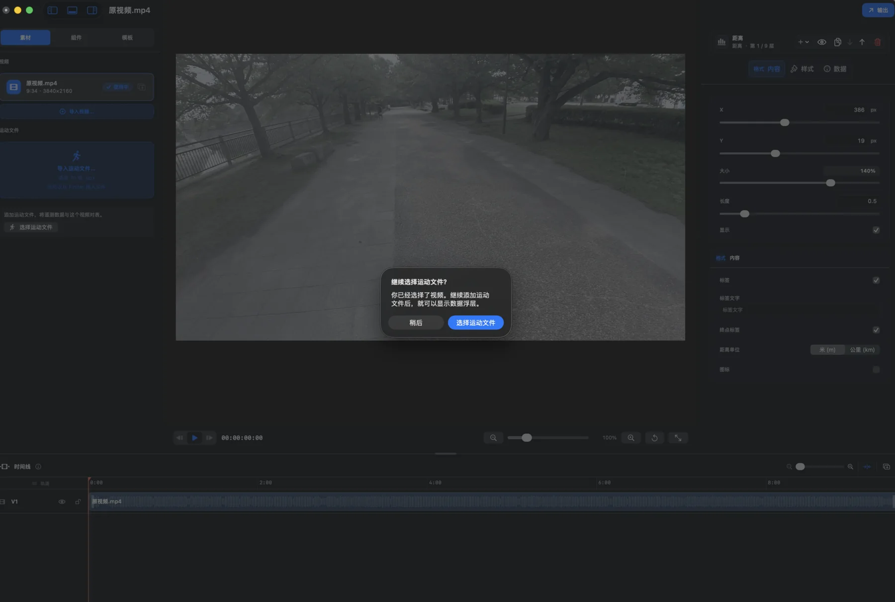
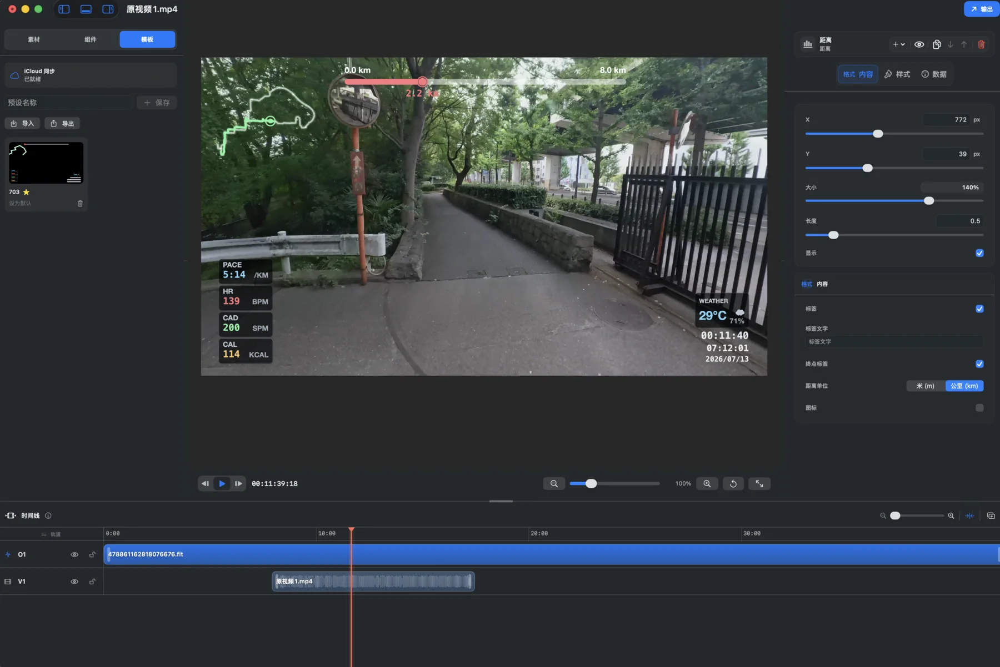
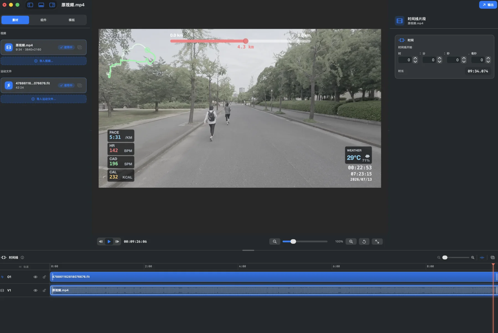

支持 ProRes 4444 或 HEVC。点击“导出浮层”，生成适合剪辑软件继续合成的透明数据层。

01
创建项目
启动 DataLayer Studio 后，在欢迎页选择一种开始方式：
- 点击“新建工程”，创建一个空白项目。
- 点击“打开工程…”，继续编辑已有工程。
- 直接选择或拖入工程、视频、FIT、GPX 文件。
- 从“最近工程”快速打开历史项目，或从“我的模板”开始制作。

02
导入视频
- 在左侧“素材”面板点击“导入视频…”。
- 选择需要添加数据浮层的原始视频。
- 导入后，视频会出现在素材列表、预览窗口和 V1 轨道中。
- 出现“继续选择运动文件？”时，点击“选择运动文件”；暂时只检查视频时点击“稍后”。

03
导入运动数据
- 在“运动文件”区域点击“导入运动文件…”，选择对应的 FIT 或 GPX 文件。
- 运动数据会进入素材列表和 O1 轨道，预览画面开始显示路线、距离、配速、心率、步频、热量、天气和时间。
- 如果视频与运动记录不是同时开始，在时间线上拖动视频片段，或在右侧“时间线片段”中输入开始时间。
- 拖动播放头检查不同位置，确认画面动作与配速、距离和路线进度一致。
04
添加和调整数据组件
切换到左侧“组件”面板，搜索并添加速度、配速、心率、步频、热量、累计爬升、距离、步幅或功率等组件。
- “格式”：修改 X、Y 位置、大小、长度和显示状态。
- “内容”：设置标签、终点标签、单位和图标。
- “样式”：调整组件的视觉外观。
- “数据”：选择组件使用的数据字段。
- 使用图层栏管理显示、复制、顺序和删除；“+”用于添加图层。
使用播放、逐帧和缩放控件检查整段视频中的位置与可读性。

05
使用和保存模板
- 切换到左侧“模板”面板，一键应用已有模板。
- 在“预设名称”中输入名称并点击“保存”，复用当前布局。
- 星标模板可以设为默认模板。
- 使用“导入”和“导出”在不同设备或项目之间迁移模板。
- 开启 iCloud 同步后，可以同步个人模板。
应用模板后，仍可继续调整组件的位置、大小、内容、样式和数据来源。

06
调整时间线
拖动播放头预览任意时间点；选中视频片段后，可在右侧设置片段开始时间并查看片段时长。
导出前重点检查：
- 视频片段与运动数据的开始位置是否同步。
- 视频首尾是否显示正确的数据。
- 路线进度、距离、配速和时间是否连续变化。
- 各浮层是否避开主体、字幕和画面边缘。

07
透明浮层
合成视频
导出成片或透明浮层
点击右上角“输出”，选择内置预设并确认分辨率、帧率、渲染范围、编码、码率、文件名和保存位置。
支持 4K HEVC、1080p H.264 和竖屏 4K HEVC。点击“导出视频”，直接得到完成影片。
渲染范围可选“完整时间线”或“多个单独片段”。导出前检查摘要中的分辨率、帧率、编码、时长、预计大小和目标文件。

08
检查导出结果
- 打开导出文件，抽查开头、中段和结尾。
- 确认原视频画面完整，路线、距离进度、配速、心率、步频、热量、天气、运动时间、时钟和日期显示正确。
- 如果浮层过大、遮挡主体或单位不合适，返回项目调整组件后重新导出。

推荐流程
最简工作流程
- 新建工程
- 导入视频
- 导入 FIT/GPX
- 对齐时间线
- 应用模板
- 调整组件
- 全片预览
- 选择导出预设
- 导出并检查结果